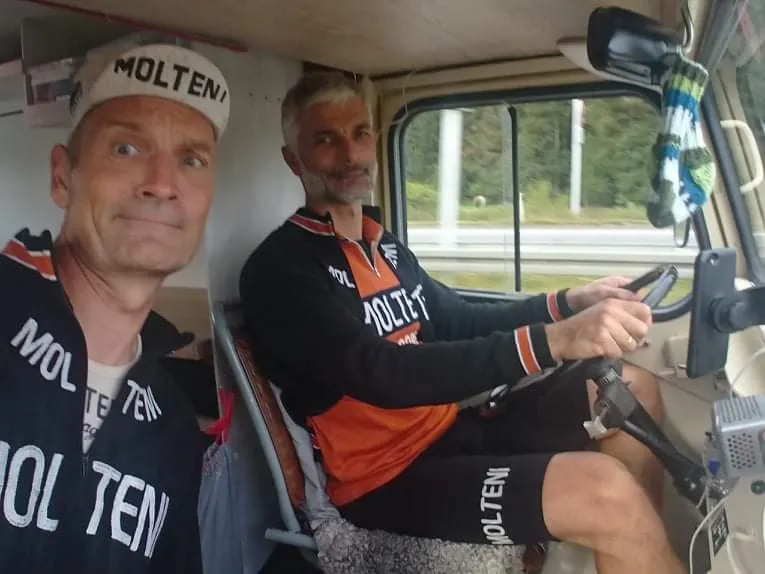
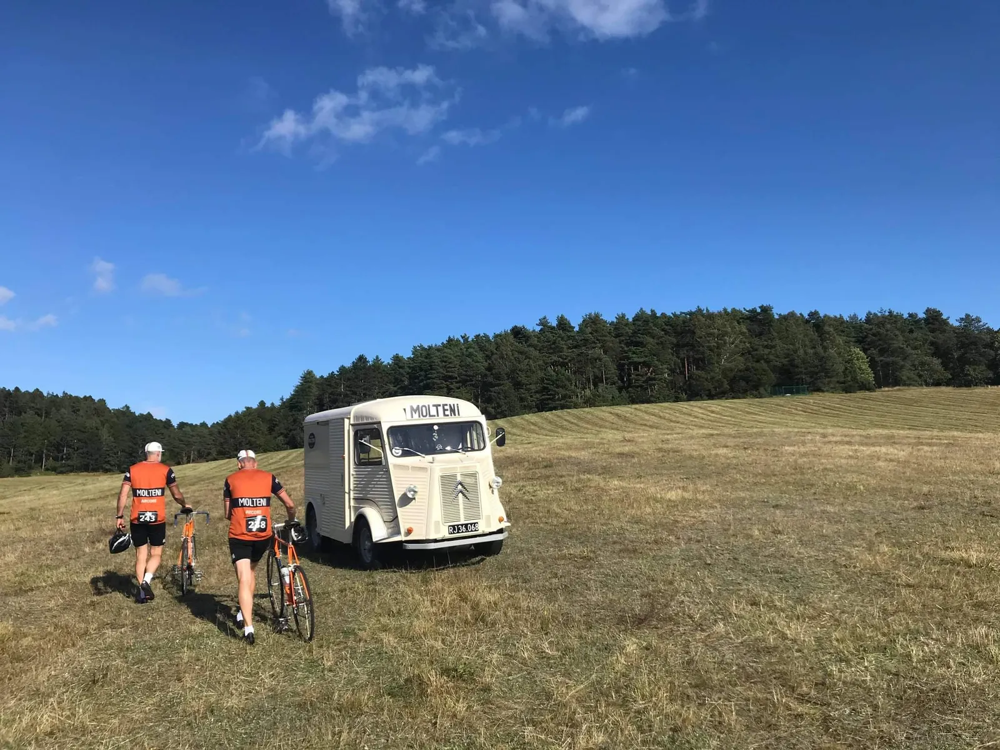

Bakker og sidevind – Mols Bjerge Grand Prix

Søndag 12/9, kl. 10.45: Pre-race briefing i Squadra Moltenis HY:
Kaptajn Bjørnsteen, Grane Maaløe, Jeppe Thiemer, Lars Munch, Claus Bech og Kristian Blume er klar. 2 ryttere er blevet hjemme på grund af whereabouts-udfordringer.
Ruten gennemgås. Startlisten og instruktionerne fra sportsdirektør Kjærsgaard tjekkes. Der venter 2 omgange á 50 km, adskillige bakker og nogle hårde sidevindsstykker ved Begtrup Vig. Det bliver en hård dag i Mols Bjerge.
Thomas Bundgaard vurderes at være den hurtigste på startlisten. Han kører dog på en raket af moderne high-tech herkomst og kan ligesom elcyklerne stryges fra listen over direkte modstandere. I øvrigt starter han i gruppen 5 minutter tidligere og med afbud fra Løjtnant Sørensen, bliver hullet givetvis svært at lukke. Bundgaard får derfor fripas.
Planen bliver i stedet, at holde styr på resten af feltet på første omgang og derefter gå efter Agri bakkespurten på anden passage efter 50 km, slå et stort hul og køre stålpodiet hjem.
Som en del af planen, kører Blume ”in disguise” med Svend Seegerts startnummer. Forhåbentlig vil dette skabe forvirring i feltet, og åbne for muligheder i løbet.
11.05: Race start
Direkte ud af startområdet i Knebel rammer feltet Agri-stigningen for første gang og får en gavmild smagsprøve på, hvad ruten har i vente. Farten afpasses til moderat lidelse og feltet strækkes ud, men holdes samlet. Kaptajnen, Thiemer og Blume tager klassiske, hårde føringer og det lykkes også for Kaptajnen at hente 10 UCI-points på en af de indlagte intermediate sprints ude omkring Handrup. Vinden og bakkerne inviterer dog til hård kørsel og Moltenis fronttrio reduceres til to mand i forsøget på at lukke et udbrud ned. Feltet brydes langsomt ned og da Knebel rammes efter 50 km mærkes benene alt for tydeligt.
12.35: Bakkespurt
Thiemer og Blume rådslår om taktikken, og Blume sendes afsted fra bunden mens Thiemer holder hjul på forfølgerne og agerer slæbeanker. Oppe foran er der for alvor lettet anker og hullet til forfølgerne er stort, da Blume runder toppen på Agri. Efter en lang jagt mod Krakær hentes nogle tidligere startende på kulraketter. Heldigt, for tankmåleren haster nedad mod det røde felt. De sidste 20 km er ren overlevelse, ikke mindst fordi sidevinden ved Kongsgårde river Molteni-dunken med den sidste sjat cognac ud af holderen og Blumes gane er tør.
14.07: Podiet sikres
Efter nogle hårde sidste kilometer sikres de to øverste trin på stålpodiet da først Blume og kort efter Thiemer ruller i mål. Munch formår at sætte Kaptajnen på plads i spurten om 3. pladsen, mens Grane og Claus rutineret har bakket af i feltet og endda taget sig tid til at samle den tabte dunk op og kikke på stendysser på det sidste stræk hjemover.
Sådan, drenge!
Sportsdirektør Kjærsgaard er lidt senere igennem til målområdet på en fastnetmønttelefon og er svært tilfreds med eksekveringen af løbsstrategien.
Det er altså bare lækkert at sidde på en solstol i sommerhuset med en kold Leffe og vide at drengene udfører den taktik, jeg faxede til dem i går. Nu venter der noget champagnekørsel nede i Vejle på fredag, inden det går løs med Grejsdals-gravel på lørdag. Vi kommer med svung! slutter Kjærsgaard inden forbindelsen bipper ud.
Tak til Bike Challenge for et godt arrangeret løb og gode flagposter. Her tænkes specielt på den pensionerede hjemmeværnsmajor og fodbolddommer ved det drilske højresving, Finn Rørlægger fra Pindstrup, der med stor autoritet styrede løjerne.
FORZA MOLTENI!

